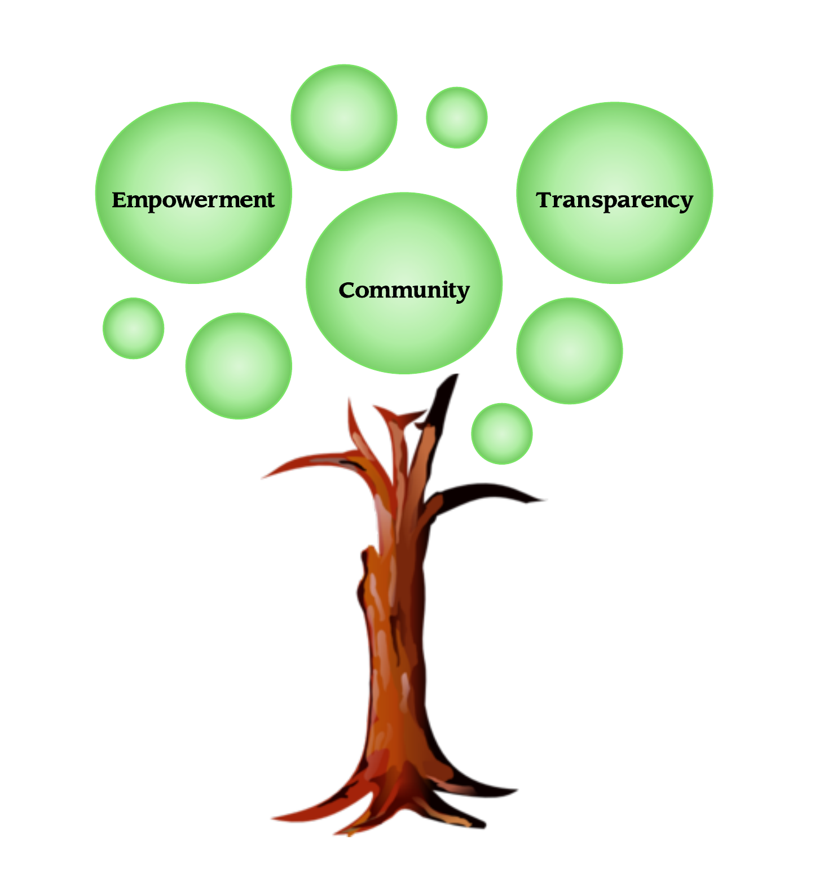

Mission
SER’s mission
is to encourage the consumption of
self-grown food using farming technology as a means of making
practical health improvements in rural communities, and
eventually communities worldwide.
About
The meaning of the Portuguese word SER is the verb “to-be” which translates to the human condition of ‘being’. SER, in this Project, is an acronym for Saúde-Health, Educação –Education, Renda-Income. These three pillars are the basis of the creation of SER. Using education, we hope to increase the overall health status of rural community members, and eventually, increase the income that extends as a result. Our team of experts offers interactive workshops to share knowledge with the urban and rural communities. We will feature preparation of healthy food, access to agroecological facilities, and premium nutritional education. Our intention is to spread our philosophy internationally to reach a variety of countries to make this technology available to as wide of an audience as possible.
Values
